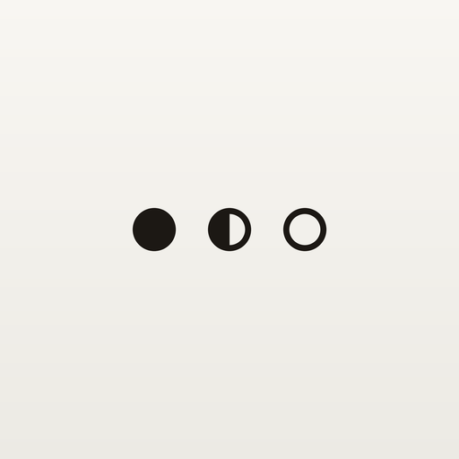

Dayglyph今日の調子を、文字盤の印ひとつで。
Apple Watch が記録した昨夜の睡眠をもとに、朝、文字盤に印をひとつ出します。数字も点数もグラフも出しません。ふだんの自分と比べて、今日はどうかだけを伝えます。
- 使う場面
- 朝の調子の確認
- 使える端末
- Apple Watch（watchOS 26 以降）
- 健康データの置き場所
- Apple Watch の中
Dayglyph はどんなアプリ？
Dayglyph は、Apple Watch が記録した昨夜の睡眠時間・睡眠中の心拍変動（HRV）と心拍数を、本人のふだん（直近最大60日の中央値とばらつき）と比べて、朝に文字盤の印をひとつ出す Apple Watch アプリです。数字・点数・グラフは出しません。
- 寝るときも Apple Watch を着けている人
- 点数や細かい数字より、ひと目で分かるほうがいい人
数字を出さない
点数もグラフも出しません。朝に文字盤を見て、印をひとつ確かめるだけです。
本人のふだんと比べる
昨夜の睡眠時間・睡眠中の心拍変動（HRV）と心拍数を、直近最大60日の中央値とばらつきと比べます。
色がなくても分かる
良好は塗りつぶしの丸、通常は左半分を塗った丸、低調は輪、保留は短い線。色が出ない文字盤でも形で見分けられます。
理由は3行で
アプリを開くと、睡眠・HRV・睡眠中の心拍がそれぞれふだんより上か下かを3行で見られます。直近7日の印も並びます。
文字盤のどこにでも
文字盤の丸・角・1行の枠に置けます。
データが足りない日は判定しない
基準は使いながら貯まります。7日分たまるまでは保留の印です。
● 良好
塗りつぶしの丸です。
◐ 通常
左半分を塗った丸です。
○ 低調
輪です。
－ 保留
短い線です。データが足りない日は判定しません。
3つの手順です。
- iPhone で Dayglyph を入手します。
- Apple Watch に入らないときは、iPhone の Watch アプリの「利用可能な App」から入れます。
- 文字盤を長押しして「編集」→「コンプリケーション」を開き、一覧から Dayglyph を選びます。
動作環境は、watchOS 26 以降の Apple Watch です。iPhone は iOS 26 以降で、入れ方の説明と購入だけに使います。
まず14日間、すべての機能を。
最初の14日間は、すべての機能を使えます。そのあとは買い切りで続けて使えます。月額・年額はありません。ファミリー共有に対応しています。
詳しくは 利用規約 と 特定商取引法に基づく表記 をご覧ください。
健康データは、腕の中だけに。
健康データは Apple Watch の中だけで扱います。iPhone にも、当方のサーバーにも送りません。アカウント登録も広告もありません。詳しくは プライバシーポリシー をご覧ください。
Dayglyph は医療機器ではありません。病気の診断・治療・予防を目的としたものではありません。
印が保留のままです
基準が7日分たまるまでは、印は保留になります。また、昨夜の睡眠が記録されていない朝も保留になります。寝るときに Apple Watch を着けてください。
iPhone だけで使えますか？
使えません。判定は Apple Watch の中で行います。iPhone は、入れ方の説明と購入だけに使います。
データはどこに保存されますか？
Apple Watch の中だけです。アプリを削除すると消えます。